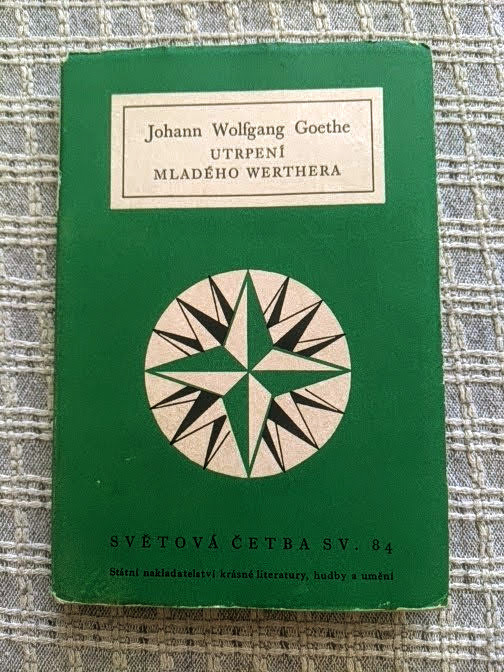
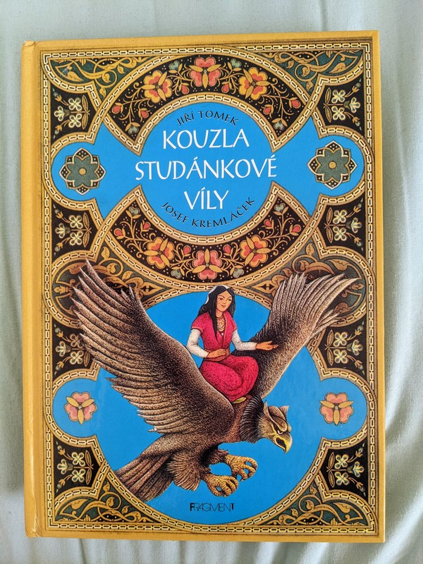
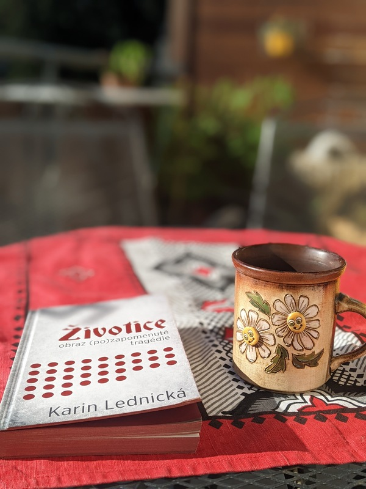
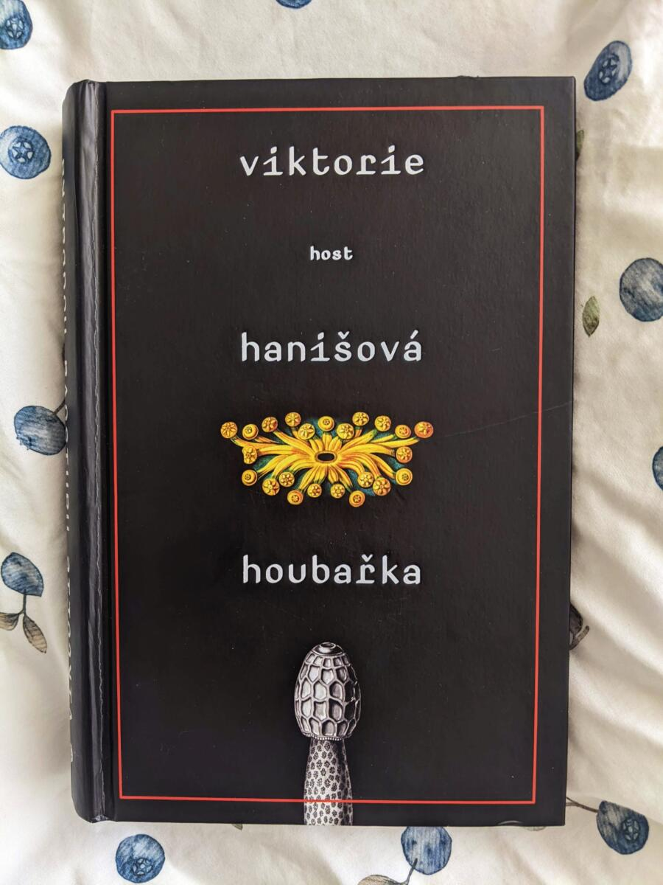
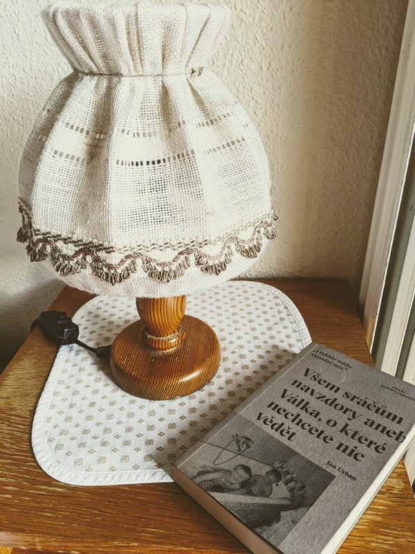

Tohle léto byly úplné literární žně, když se tak s uspokojením dívám na hromádku přelouskaných titulů :-). Zčásti i proto, že jsem si konečně vybrala svou tučnou provizi na ReKnihách a pořídila si za ni… no jak jinak, knihy :-D. Ale nejen o těch to dnes bude.
Johann Wolfgang Goethe - Utrpení mladého Werthera
Mám tak mnoho a mé city k ní pohltí vše; mám tak mnoho a bez ní obrací se mi to vše v pouhé nic.
Úplně na začátek tu mám tenhle poklad z kroměřížského antikvariátu, který jsem si koupila tuším někdy v maturitním ročníku a právem patří ke klasickým a nestárnoucím titulům, které oslovily už tolik generací čtenářů. Opět (stejně jako v případě Milenců a vrahů) mě při čtení moc bavilo pozorovat podtrhané pasáže, které mě oslovovaly v osmnácti, když jsem Werthera četla poprvé… a zjišťovat, že některé z nich mě dnes oslovují úplně stejně jako tenkrát.

Jiří Tomek - Kouzla studánkové víly
Aneb malý ponor do dětství s touto útlou knížečkou sedmi arabských pohádek, které jsem objevila ve své kroměřížské knihovničce. Občas není špatné vyplnit pauzu mezi literaturou faktu a dospěláckou beletrií čtením pohádek :-) A to by člověk řekl, že už toho jako máma čtyřleťáka musím mít dost :-D…

Karin Lednická - Životice
Po okouzlení Šikmým kostelem jsem si pochopitelně nemohla nechat ujít další, byť rozsahem i zpracováním trochu odlišné dílko spisovatelky Karin Lednické. Životická tragédie je ponurou kapitolou českých dějin druhé světové války, o níž se ve školách, na rozdíl od vyhlazení Lidic či Ležáků, vůbec nehovoří, a tak pro většinu čtenářů nejspíš bude celá událost novinkou. Na sklonku války dochází v malé vesnici uprostřed Těšínského Slezska k vyvraždění šestatřiceti nevinných mužů ze Životic a okolí jako odveta za partyzánskou akci v místní hospodě, při níž byli zastřeleni tři příslušníci gestapa. Kniha je zajímavou kombinací předkládaných faktů a beletristického zpracování celé události a je doplněna i bohatou fotografickou přílohou z archivu pozůstalých příbuzných. Rozhodně bych ji doporučila k přečtení už jen pro získání povědomí o této (po)zapomenuté tragédii(jak příznačně stojí v podtitulu knihy), v níž hrála značnou roli i osobní msta a náhoda. Karin Lednická opět odvedla precizní práci, jejíž součástí bylo i zpovídání přímých aktérů události, zejména potomků zavražděných obětí.

Viktorie Hanišová - Houbařka
Viktorie Hanišová je pro mě letošním objevem současné české literatury! Houbařka údajně patří k jejím nejzdařilejším dílům a musím říct, že mě tento román opravdu pohltil. Na první pohled nenápadný příběh o dívce, která žije v Pošumaví odloučená od civilizace a živí se sběrem hub, se postupně mění v mrazivou rodinnou tragédii. Hlavní hrdinka Sára stránku po stránce poodkrývá traumatické zážitky ze svého dětství, a přestože se může na první pohled jevit jako pasivní postava, získala si moje sympatie a upřímně jsem jí celou dobu fandila, aby se její život obrátil k lepšímu. Jediné, co mě na knize zklamalo, byl takový nijaký závěr. Nedochází tam k žádnému nečekanému twistu, ale ani k rozuzlení nebo naznačení, co se bude dít dál. Žádná satisfakce, naděje na happy end nebo naopak tragické vyústění… nic. A přesto je ta kniha prostě skvělá a musíte si ji přečíst!

Jan Urban - Všem sráčům navzdory aneb Válka, o které nechcete nic vědět
Absyntovka, jež vám připomene, že to vlastně není vůbec tak dávno, co v Evropě zuřila válka, která si s tou současnou co do krutosti rozhodně nezadá. Reportér Jan Urban přináší v této knize soubor krátkých esejů, v nich´ž podává svědectví o konfliktu, který v 90. letech zuřil na Balkáně. Není lehké číst o tom, jak se z lidí vytrácí lidskost. Místy vám z té četby bude opravdu zle. Ale možná právě kvůli kontextu dnešní doby je důležité mít tyhle věci stále na paměti. Nejvíce mě zasáhla velmi osobní reportáž, v níž autor popisuje své pocity z toho, když při své práci hledí tváří v tvář smrti… Jediné, co bych knize vytkla, je to, že alespoň ve zkratce neshrnuje okolnosti vzniku války. Pro nás - generaci, které bylo v době rozpoutání konfliktu asi tolik, kolik je dnes našim dětem - je přece jen nutné dostat se trochu do obrazu a něco málo si k tomu načíst.
